MACHU PICCHUMist, stone, and a train that earns the reveal.
Aguas Calientes mornings, PeruRail windows through the Sacred Valley, a winding bus up the mountain, llamas on the terraces, and a citadel that only appears when the clouds decide to move.
1–2Days on site
2,430m elevation
~6Frames that stuck
The train is the approach. The citadel is the silence.
Machu Picchu is a pilgrimage with logistics — 4am alarms, valley rails, and a bus switchback before the stones appear. When the mist lifted on the terraces, the precision of the walls and the green drop into the gorge made the whole Peru arc make sense. One or two days is enough to feel it; booking months ahead is what makes it possible.
Where I actually walked.
Every tagged stop is on the map. All pins shows them together — tap a name to zoom in. Each popup opens the same place in Google Maps.
Stay in Cusco or Ollantaytambo and take an early train. Hostels in Aguas Calientes beat citadel-view premiums. Inca Rail often wins on price vs fancy PeruRail cars.
☀️ Dry season (May–Sep)
Clearest views, cold nights, busiest gates. June–August is peak photography weather and peak crowds. Book everything early.
🌧️ Wet season (Dec–Mar)
~18°C, daily rain, lush green, fewer people. Inca Trail closed in February. Mist can erase the postcard for hours.
🍃 Shoulder (Apr & Oct)
Milder crowds, mixed weather, better hotel deals. Good compromise if dry-season tickets are gone.
❄️ Midwinter mornings
June–August mornings can be crystal. Nights bite. Pack layers for the bus queue.
🚂 Train from Cusco area
Most popular: Ollantaytambo or Poroy → Aguas Calientes. PeruRail and Inca Rail. Book early for price and seat.
$65–200
🥾 Inca Trail
Classic multi-day approach through ruins and passes. Permit-limited. Operator required.
$500–800
🚌 Bus up the mountain
From Aguas Calientes to the gate. Frequent from ~5:30am. Or hike the trail up.
~$24 RT
🚶 Inside the citadel
Walking only on your circuit. Guides help the stones speak. Shoes with grip — wet stone is real.
On foot
💧 Town walks
Aguas Calientes waterfalls and hot springs after the ruins. Soft legs day.
Optional
Select your citizenship
Usually a Peruvian visa — or a conditional exemption. Indian ordinary-passport holders typically need a tourist visa unless they qualify for Peru’s exemption (valid US/UK/Canada/Australia/Schengen visa with enough remaining validity, or permanent residence in those places). Always verify with Migraciones Perú / the Peruvian consulate before you fly.
Where are you currently residing?
📅 Tourist visa (if no exemption)
WhatPeruvian tourist visa via a Peruvian consulate (e.g. New Delhi)
StayAuthorized length is set at entry — often up to ~180 days in a year for tourism categories; officer decides
ProcessingOften about 7–10 working days after interview — confirm locally
ApplyStart at least 15 days before travel; earlier is safer
🪪 Conditional visa-free?
Valid visa from USA, UK, Canada, Australia, or Schengen with typically 6+ months remaining at entry
Or permanent residence in those countries/areas
Airlines may interpret Timatic differently — print official guidance
Transit rules can differ from entry rules — check your routing
📄 Typical documents
Passport valid 6+ months
Visa application (DGC-005) if applying
Photos, itinerary, lodging proof
Funds / employment / ties evidence
Return or onward ticket
💡 Pro tips
Confirm with the Embassy of Peru / Migraciones Perú — not a blog comment
Carry printed exemption proof if you rely on a US/Schengen visa
Boarding denial can happen even when entry rules look clear
TAM / Andean migration card processes change — follow current airport instructions
Important: General guidance only. Fees, exemptions, and document lists change. Verify on consulado.pe / Migraciones Perú before you book nonrefundable tickets.
Often visa-free for short tourism if your US visa qualifies. Indian nationals with a valid US visa (commonly needing ~6 months remaining validity at entry) or US permanent residence are frequently exempt from a separate Peruvian tourist visa. H-1B/H-4/OPT holders usually rely on the valid US visa stamp/status — still verify Migraciones Perú and your airline before departure.
✈️ Typical exemption path
VisaOften no Peruvian visa if US (or other listed) visa meets the minimum remaining validity
StayUp to ~180 days/year tourism categories are commonly cited; entry officer decides
StatusKeep H-1B/H-4/OPT (or other) valid for the whole trip and for US re-entry
🪪 Carry anyway
Indian passport
Valid US visa stamp / green card if applicable
I-797 / EAD as relevant
Return ticket to the US
Lodging proof and sufficient funds evidence
📄 If exemption does not apply
Apply for a Peruvian tourist visa at a consulate with jurisdiction over your US state
Do not assume every US visa category qualifies — confirm
Student/short visas are sometimes treated more strictly than travel/business visas
💡 Tips
Screenshot or print the official exemption language for airline desks
US re-entry needs a valid US visa/stamp — Peru does not fix that
Do not treat Machu Picchu day as a same-day sprint from Lima — build from Cusco / the valley
Rules change — Migraciones Perú is the source of truth
Important: Status and exemption questions are individual. When in doubt, check Migraciones Perú / the Peruvian consulate and your airline — not a comment thread.
No visa required for tourism. US citizens can typically visit Peru visa-free for short tourism stays. Authorized length is set at entry.
✈️ Visa-free entry
VisaNone for ordinary tourism (confirm current MFA matrix)
PassportValid; 6 months remaining is a common airline/consular expectation
PurposeTourism, short visits — not work
🛂 Entry checklist
Valid US passport
Return / onward ticket
Proof of accommodation
Sufficient funds for the stay
Follow current TAM / arrival form instructions
💡 Travel tips
Peak May–Sep spikes Aguas Calientes hotels and train seats
If you continue to another country, that leg needs its own documents
Book entry tickets and Huayna Picchu circuits months ahead — that is logistics, not immigration
📍 Local note
You enter Peru elsewhere (usually LIM), then reach Aguas Calientes by train. Machu Picchu tickets are not a visa — but your Peruvian admission still governs the stay.
Note: Visa-free still means immigration rules. Check travel.state.gov / Migraciones Perú for the latest stay limits and entry forms.
What stayed on the roll.
Six chapters from the sanctuary — Aguas Calientes streets, residential terraces, ancient houses, the walk through mist, PeruRail windows, waterfalls, guide talk, and a llama that photobombed the pilgrimage.
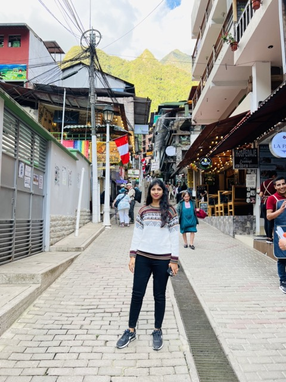
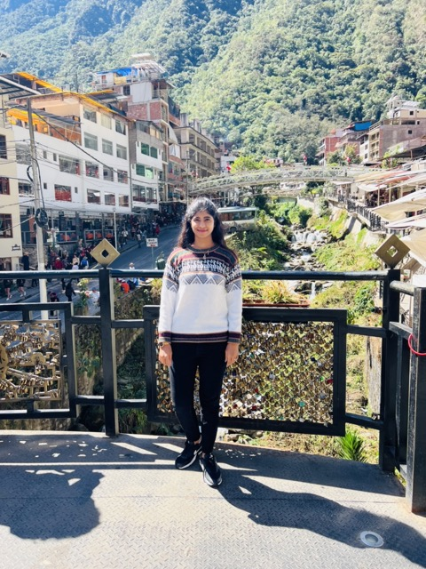
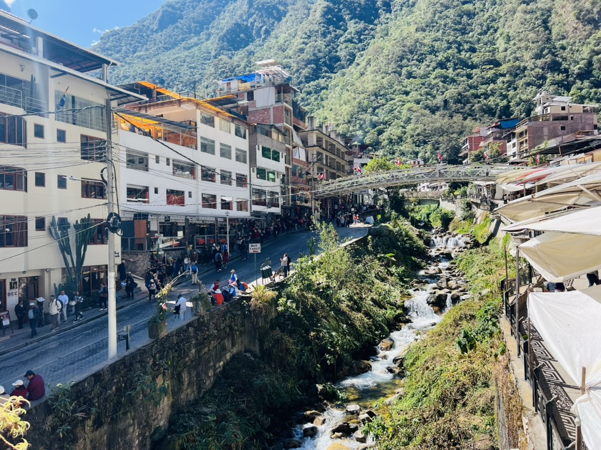
01 / 03
01 / 06
Aguas Calientes
The river town that exists for this pilgrimage — trains, hostels, early alarms. Touristy and still the practical base before the bus climbs.
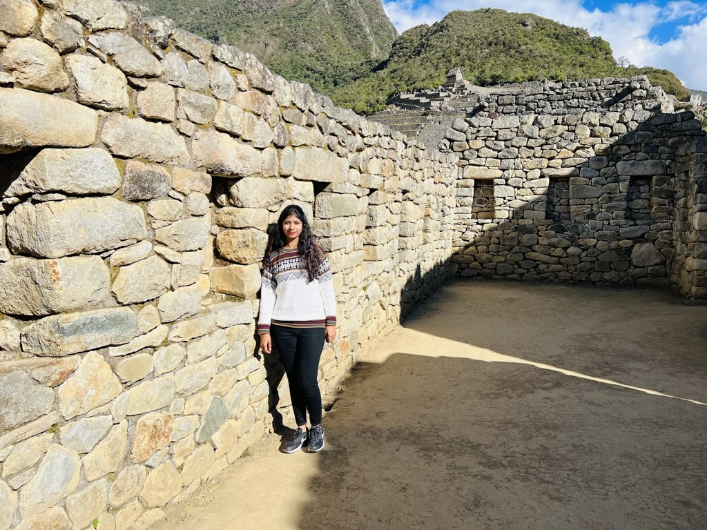
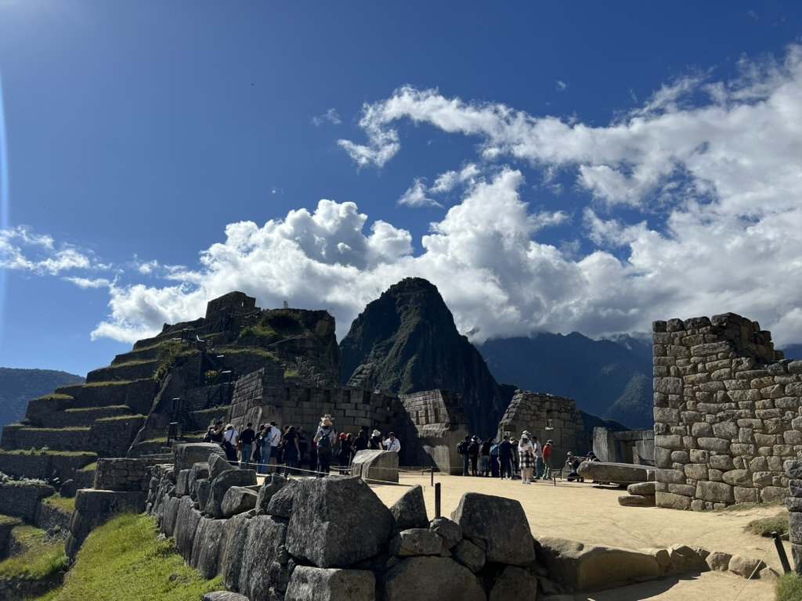
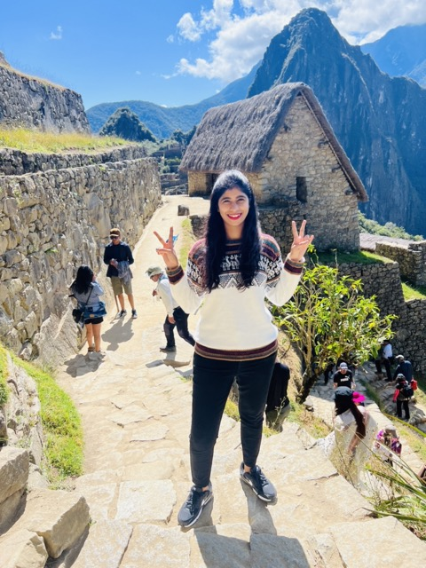
01 / 03
02 / 06
Houses in the clouds
Residential quarters and ancient stone houses — daily life stacked into a ridge. The citadel is not only temples; it is rooms that still hold weather.
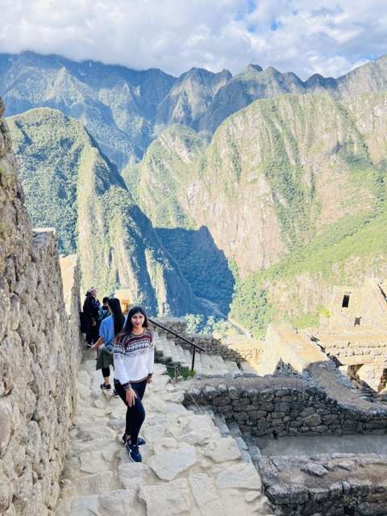
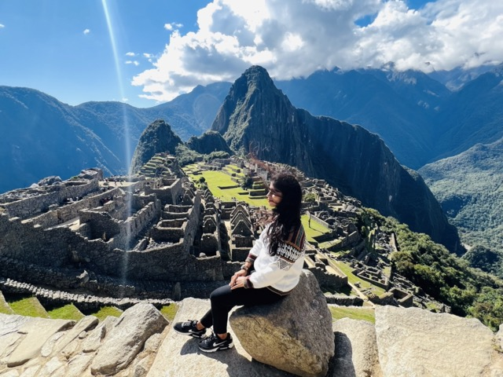
01 / 02
03 / 06
When the mist lifts
Walking the circuits until the postcard finally appears. Stone precision, green drop, a silence between tour groups. This is the frame everyone came for.
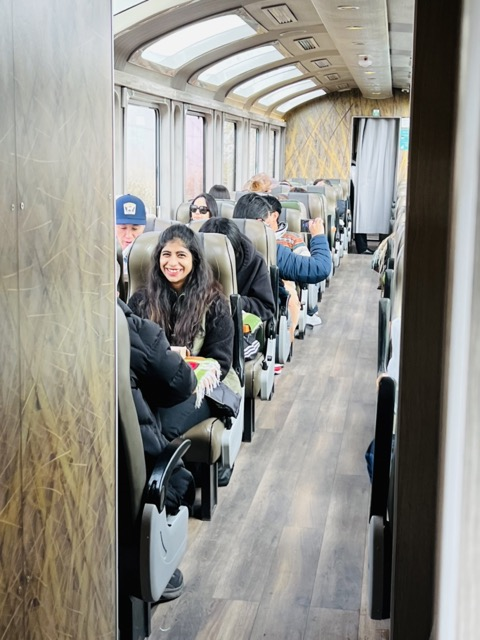
01 / 01
04 / 06
PeruRail windows
The train is half the memory — valley walls, river, anticipation. Rising at 4am feels less absurd when the windows start paying you back.
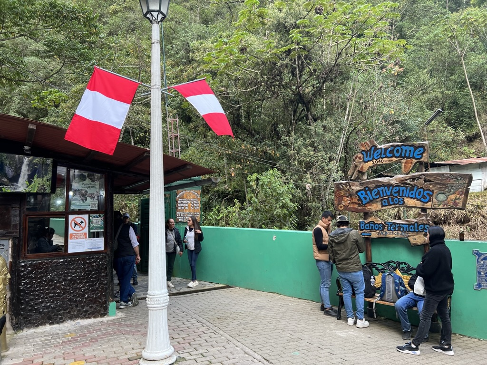
01 / 01
05 / 06
Water after stone
Cataratas near Aguas Calientes — a soft walk when your legs refuse another terrace. The town’s other soundtrack is falling water.
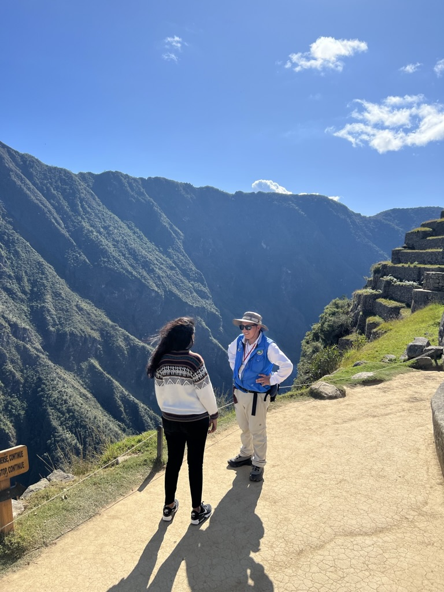
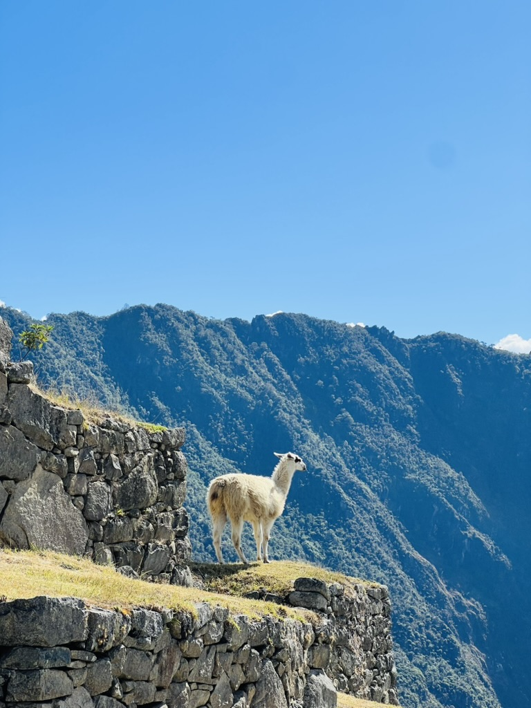
01 / 02
06 / 06
Guides and llamas
Insights from a guide who makes the terraces speak — and a llama that treats the pilgrimage like a casual commute. Both belong in the roll.
Still on the list.
The citadel filled the day. These are the climbs and dawns I still owe the sanctuary.
⛰️ Huayna Picchu
I stayed on the main circuits. The peak ticket is unfinished business — and a knee conversation.
Extra ticket
🥾 Inca Trail
I took the train. Four days of ruins and passes would rewrite the approach.
4 days
🌅 True sunrise clear
Mist won my early slot. A crystal June morning on the classic viewpoint is still owed.
Dawn
♨️ Hot springs soak
I walked past the baths toward food and sleep. Next time, soak after the bus down.
Evening
⛰️ Machu Picchu Mountain
The other peak ticket. Different view, same booking anxiety. Saved for a return.
Extra ticket
If you have another day.
Second circuit if tickets allow. Hot springs and waterfalls if your legs quit. Or return to Cusco and let the altitude settle.
🏛️ Second circuit morning
Different timed path through the citadel. Only if you booked two entries — rare and worth it in clear weather.
Half day
💧 Falls + hot springs
Aguas Calientes soft day after the pilgrimage. Water over more stone.
Half day
🚂 Back to Cusco
Afternoon train, plaza dinner, lungs still arguing. The arc closes where it opened.